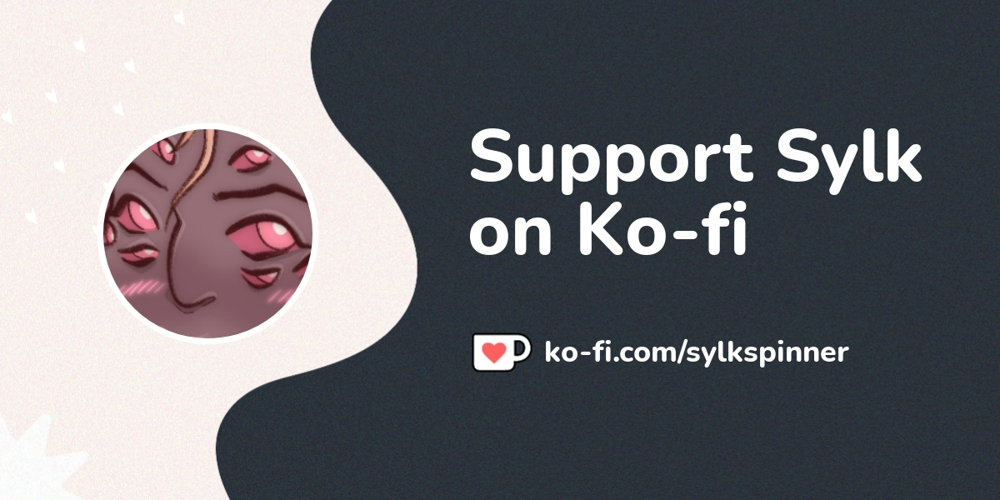

How to reach me!
Currently I am receiving contact via my discord DMs (@SylkSpinner) or my ko-fi!
If you prefer though, my business e-mail is thespidersweb@gmail.com!
Where to find me!
On Twitch, you can find me here!
To support me, check out my ko-fi!
